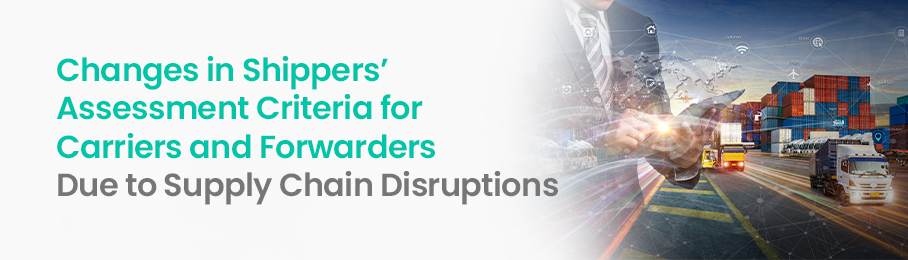
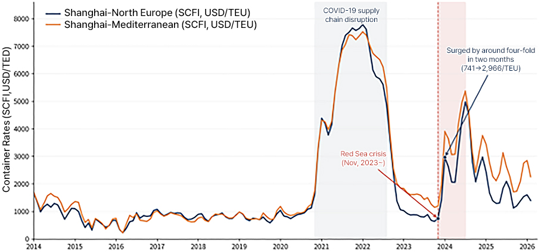

Changes in Shippers’ Assessment Criteria for Carriers and Forwarders Due to Supply Chain Disruptions

Until the COVID-19 pandemic, shippers' criteria for selecting carriers and forwarders were relatively clear. They would find candidates capable of transporting cargo from the designated origin to the destination, compare the freight rates, transit times, and service conditions each offered, and then select the most economical option. If there was no significant difference in the services offered by carriers and forwarders, the candidate offering the lowest rate was given priority. This was because shippers' logistics activities were basically regarded as procurement activities aimed at reducing costs.
However, in the era of polycrisis caused by continued supply chain disruptions [1], such a precondition is no longer valid. Supply chain disruptions are no longer perceived as exceptional events that occur temporarily in specific regions, but as recurring structural risks—becoming a factor that reshapes the structure of ocean shipping networks and transport routes [2].
Against this backdrop, shippers' criteria for selecting carriers and forwarders are also changing. However, it is more accurate to say that this reflects a shift in the importance and meaning of existing criteria, rather than the emergence of entirely new ones. Factors such as freight rates, on-time delivery (OTD), freight space, network, customer service, and information provision have always been important from the past. What has changed is the purpose behind how shippers evaluate these criteria.
In the past, if the key question was “who can transport at the lowest rate?”, now the more critical question is “who can maintain the cargo flow even when disruptions occur?” In other words, the purpose behind shippers' selection of logistics partners is shifting from simply minimizing transport costs toward managing supply chain volatility and potential losses.
1. Shippers’ Traditional Assessment Criteria
Shippers’ criteria for selecting carriers and forwarders can be categorized into seven factors.
First is cost and price stability. This includes not only basic freight rates but also charges such as fuel surcharge, peak season surcharge (PSS), demurrage, storage charge, and forwarding fee, as well as the possibility of price fluctuations during the contract period.
Second is transit time and schedule reliability. This includes announced transit times, on-time arrival rates, blank sailing frequency, cargo rollover, and the stability of transshipment connections.
Third is freight space and equipment availability. What matters is whether shippers can actually secure space when needed, and whether necessary equipment—such as empty containers and refrigerated containers—is supplied in a timely manner.
Fourth is service frequency and network scope. This includes direct service availability, ports of call, sailing frequency, transshipment structure, inland transportation connections, and door-to-door service capability.
Fifth is cargo management and claim handling capability. Evaluation criteria include cargo safety, damage and loss prevention, the ability to handle dangerous goods and special cargo, and the handling of compensation and claims following an incident.
Sixth is responsiveness and expertise. What matters is how rapidly a provider responds when problems occur, how much knowledge it has of regulations and customs, and whether it can offer alternative solutions.
Last is corporate reliability and visibility. This includes financial soundness, corporate reputation, network of overseas partners, cargo tracking, ETA accuracy, and the ability to integrate with electronic documentation and information systems.
These seven criteria existed even before supply chain disruptions became prevalent. What has changed is how shippers view these criteria. In the past, it was common to compare each factor and select the candidate with the highest overall evaluation. Now, however, shippers need to assess how well these criteria can ensure the continuity of the supply chain amid disruptions.
2. Changes in Assessment Criteria
2.1 From the lowest freight rates to risk-adjusted logistics cost
Since the onset of supply chain disruptions, the first thing that needs to be redefined is the cost evaluation criteria. For shippers, freight rates are still important. In particular, for cargo such as raw materials and commodity products—where logistics costs account for a large share of the product price—freight rate competitiveness is difficult to ignore. However, the lowest freight rate doesn’t necessarily mean the lowest logistics cost.
Even if shippers choose a service with lower rates, repeated shipment rollovers or significant arrival delays force them to secure additional inventory. They may have to revise production planning, use urgent air freight, or bear the losses resulting from delayed deliveries to customers. When demurrage, storage charges, additional warehousing costs, order cancellations, and production downtime costs are all factored in, the total cost incurred can far exceed the initial savings from the lower freight rate.
Thus, in the era of supply chain disruptions, transport alternatives have to be evaluated based on the following risk-adjusted logistics cost.
- Risk-adjusted logistics cost = Direct freight rate + Various ancillary costs + Inventory cost + Delay cost + (Disruption probability x Expected loss)
From this perspective, not only freight rate levels but also rate stability, surcharge transparency, and predictability of contract terms become important. The sharp, short-term surge in container freight rates from Asia to Europe during the early stages of the Red Sea crisis illustrates how route disruptions can have an immediate impact on freight space and rates.
In the end, shippers should not make a judgement on cost efficiency just by looking at freight rates on the surface. Instead, they should evaluate which alternative is the most economical, factoring in the indirect costs that may arise from transport disruptions.

(Source: Shanghai Containerized Freight Index[3])
2.2 From average transit time to transit time fluctuation
OTD and transit time have long been two factors of assessment criteria from the past. However, since the supply chain disruptions began, service reliability and its meaning have changed. In the past, if a service had a short published transit time and high sailing frequency, it was evaluated as competitive. Now, the actual transit time fluctuation and ability to recover from disruptions may be more important than average transit time.
If a service has an estimated transit time of 25 days but actually arrives between 25 and 40 days, it becomes difficult for shippers to plan production and inventory. On the other hand, even if the estimated transit time is 30 days, if the actual arrival date consistently falls between 29 and 32 days, the latter case may be more advantageous for supply chain planning. Therefore, shippers need to look beyond the simple average transit time and also check indicators such as on-time arrival rate, standard deviation of transit time, cargo rollover rate, blank sailing frequency, and transshipment failure rate.
According to the Journal of Commerce [4], supply chain certainty—rather than cost—is expected to shape shippers' decision-making in the 2026 ocean shipping market. As disruptions come to be recognized not as temporary events but as recurring structural risks, shippers are placing greater importance on the predictability and reliability of services.
2.3 From securing freight space to guaranteeing transport capacity
Before the pandemic, securing vessel space and container equipment was mainly viewed as a peak-season operational issue. However, the freight space shortages and container supply-demand imbalances that emerged during the pandemic demonstrated that transport capacity itself is a pivotal factor determining supply chain competitiveness.
What matters to shippers is not only the freight space specified in the contract but also the actual availability of that space on the required routes and at the required times. Therefore, when entering into an annual transportation contract, it is essential to verify not only the minimum volume commitment but also the level of guaranteed space, equipment availability conditions, the criteria for cargo rollover handling, and whether alternative sailings will be provided in case of a blank sailing.
The same principle applies to selecting forwards. Rather than relying on a forwarder that emphasizes its relationship with specific carriers, it is more beneficial to work with one who can secure spaces from multiple carriers and reallocate them in accordance with market conditions. Such forwarders can provide greater values in times of disruption.
The reason for key factors such as securing and substitutability of buffer resources in the study of supply chain resilience also lies here. Spare space and alternative modes of transport may seem inefficient under normal circumstances, but when disruptions occur, they become a kind of insurance that secures supply chain continuity.
2.4 From network scale to alternative network connectivity
In the past, shippers evaluated the carriers’ network competitiveness based on the number of calling ports, direct service availability, and voyage frequency. As for forwarders, the key criteria were the number of overseas branches and partners and the range of transportation modes available. However, with recurring supply chain disruptions, the key focus of network assessment is shifting toward securing alternative routes and connectivity when existing routes are disrupted.
Despite many calling ports and broad service scope, a network that is heavily dependent on a particular transshipment port or a strait is vulnerable to disruption; the whole service can be impacted when disruptions occur at the particular branch. On the other hand, even though service scope is relatively limited, cargo flow can be promptly recovered in crisis as long as multiple transshipment ports and alternative routes and a stable inland transport network are secured. As a result, the key point is not the scale of network but the ability to shift to other routes when one of the routes is disrupted.
Journal of Commerce[5] highlighted that, as supply chain volatility expands, shippers are diversifying short haul inland transport providers that connect ports with hinterlands. Concentrating volume with a single provider can secure economies of scale in freight rate negotiations and operational efficiency. However, if that provider encounters transport capacity constraints, the entire cargo flow from the port to the inland destinations can be disrupted. Consequently, shippers are shifting their strategy toward securing multiple transport providers, strengthening their ability to use alternative providers during disruptions rather than focusing solely on everyday efficiency.
2.5 From reactive response to proactive problem-solving
Customer service is generally evaluated based on quotation response speed, helpfulness of customer service staff, and claim handling. However, amid the supply chain disruptions, the meaning of responsiveness gets even broader. What matters is not simply replying to inquiries after problems occur, but identifying potential disruptions before they affect shippers’ production and sales and preemptively proposing alternative solutions.
During disruptions, roles expected of carriers and forwarders can be classified into three stages. First, they must be able to identify potential disruptions early. Second, they have to explain their potential impact on cargo and supply chains. Third, they should provide feasible alternative solutions, including alternative freight space and ports, and modes of transport.
In particular, a forwarder’s competitiveness derives more from its ability to coordinate multiple parties than from its ability to transport cargo directly. Forwarders connect ocean carriers, airlines, trucking companies, rail operators, ports, customs authorities, and warehouse operators. Consequently, a competent forwarder is not a broker that merely secures the lowest freight rates, but a firm that can reconfigure the entire logistics flow in the event of disruptions.
2.6 From Location Tracking to Decision Support
Digital visibility is an evaluation criterion whose meaning has changed significantly after supply chain disruptions. In the past, cargo tracking was more about checking which port a container departed from and where it currently is. However, what is important to shippers today is not the location information itself, but how that information helps with production and inventory decision-making.
Even if the location of the vessel is provided in real time, it is not much help for a shipper’s decision-making if the ETA continues to change or the possibility of transfer failure cannot be known. The information needed by the shipper is the accuracy of the ETA, port congestion and the possibility of docking delays, transshipment connections, possible container release time, and changes in inland transportation schedules.
Therefore, information visibility should be evaluated at three levels. The first is technical visibility, which shows the current status of the cargo. The second is analytical visibility, which predicts the possibility of future delays. The third is operational visibility, which suggests alternatives to respond to delays.
Shippers should not evaluate visibility based solely on the platform screens or feature lists of carriers and forwarders. They must also review data accuracy, update frequency, reliability of ETA, API and EDI connectivity, exception notifications, and document accuracy.
2.7 From Corporate Reputation to Integrated Risk Management
The final criterion is risk management and corporate accountability. In the past, the financial soundness of carriers, cargo safety, claims records, and corporate reputation were the main evaluation targets. Recently, the scope of evaluation has expanded to include geopolitical risks, cybersecurity, sanctions and customs regulations, environmental regulations, and business continuity plans.
Shippers should check whether a carrier is overly dependent on a particular route or alliance, and whether a forwarder is concentrating volume on a specific carrier or region. It is also an important evaluation factor to determine whether operations can continue if the main information system is interrupted. The existence of a risk management plan in writing is different from having actual response capabilities, so it is necessary to verify what actions were taken in past disruption situations.
The ability to respond to environmental regulations is also part of this risk management. Geopolitical disruptions, such as diversions around the Red Sea, can increase transportation distances and fuel consumption, leading to additional costs and increased carbon emissions[6]. Therefore, shippers must evaluate not only their ability to respond to transportation disruptions but also their capacity to manage the environmental and regulatory burdens arising from such options.
[Table 1] Carrier and Forwarder Evaluation Checklist for Shippers — In the Era of Supply Chain Disruptions, Comparing New and Old Perspectives on Seven Criteria—
| NO. | Evaluation Criteria | Past perspective | Perspective after Supply Chain Disruption | Key Evaluation Questions | Shipper Practical Check List |
|---|---|---|---|---|---|
| 1 | Cost and price Stability | Securing the lowest freight rate | Minimize risk-adjusted logistics costs | Is it the most economical from the perspective of actual costs rather than surface rates? |
□ Basic freight and surcharges (BAF/PSS/Detention/Demurrage) transparency □ Conditions for imposition of surcharges during the contract period □ Cost burden structure in case of inventory, delay, and urgent transportation □ Whether to provide basis for calculation of risk-adjusted logistics costs |
| 2 | Transit time · Schedule reliability | Short average transit time, high sailing frequency | Transit time variability, recoverability | How accurately is the scheduled ETA kept? |
□ 12-Month Performance Data of On-Time Performance (OTP) □ Standard deviation of actual transit time □ Cargo rollover rate □ Blank sailing frequency □ Transshipment failure rate |
| 3 | Capacity and equipment availability | Secure peak season capacity | Transportation capacity available even during disruptions | Can we actually secure capacity at the needed time? |
□ Level of actual capacity guaranteed compared to annual contract minimum volume
□ Terms of supply for empty/reefer/special containers □ Criteria and priority for rollover □ Provision of alternative options in case of cancellations □ Accessibility to multiple carrier capacity (when evaluating forwarders) |
| 4 | Network · Connectivity | Number of ports of call, direct flight service, frequency of routes | Capacity for securing alternative routes, node risk diversification | Is there an immediate alternative that can be switched to when one route is blocked? |
□ Existence of alternative services by major routes □ Diversification of transshipment ports (reducing dependence on a single hub) □ Diversification of inland transportation operators (Drayage) □ Multi-modal transportation combining port, rail, and truck □ Regional alternative transportation options |
| 5 | Responsiveness · Problem Solving | Quotation response speed, after-sales claim handling | Early detection of disruption and proactive alternative proposals | Do you inform in advance and suggest alternatives before a problem occurs? |
□ Operate early risk warning channel □ Provide impact analysis report in case of disruption □ Capability to propose viable alternative capacity·port·mode □ Designate 24/7 issue response personnel □ Customs·regulatory response expertise |
| 6 | Information visibility | Container location tracking | Predictive and practical decision support | Is the information providing substantial assistance in production, inventory, and sales decision-making? |
□ ETA prediction accuracy and update frequency □ Advance notification of port congestion and berthing delays □ Real-time verification of transshipment connections □ Integration with internal systems via API/EDI □ Automatic alerts for exceptions and document accuracy |
| 7 | Integrated risk management · Reliability | Financial Soundness · Corporate Reputation | Integrated geopolitical, cyber, regulatory, and environmental response | Can business continuity be ensured even if multilayered risks occur? |
□ Dependence on specific routes, alliances, and carriers □ Ability to implement a business continuity plan in case of information system disruption □ Response history for sanctions, customs clearance, and environmental regulations □ Cybersecurity certifications (ISO 27001, etc.) □ Actual response measures to past disruptions □ Carbon emission data and reduction roadmap |
3. Conclusion
3.1 Differences in Evaluation Criteria Between Shipping Lines and Forwarders
Both shipping lines and forwarders provide transportation services to shippers, but their roles in the supply chain differ. Therefore, even if the same seven main criteria are applied, the detailed evaluation items and weights should be different. If this distinction is not made, there is a risk of evaluating companies with different roles using the same standards.
Shipping lines are the actual carrier that owns or controls vessels and container equipment, and directly operates routes and schedules. Therefore, when evaluating a shipping line, one should focus on schedule reliability, availability of capacity and equipment, direct and transshipment structures, cancellations and cargo rollovers, terminal connectivity, and route safety.
On the other hand, forwarders play a role in combining and coordinating various carriers and logistics services. Therefore, in evaluation of forwarders, accessibility to multiple carriers, the ability to design alternative routes, the capability to integrate Door-to-Door services, expertise in customs clearance and regulations, the ability to integrate information, and the speed of crisis response are more important.
In the end, a carrier should be evaluated based on "whether it can transport cargo stably." A forwarder should be evaluated based on "whether it can secure transportation continuity by combining various transportation alternatives even in disruptive situations."
[Table 2] Guide for Adjusting Evaluation Criteria Weights by Carrier and Forwarder — Even with the same seven criteria, the weights should vary depending on the role —
| Evaluation Criteria | Relative Importance in Carrier Evaluation | Relative Importance in Forwarder Evaluation |
|---|---|---|
| 1. Cost·price stability | Mid | Mid |
| 2. Transit time·schedule reliability | High (Directly Operated) | Mid (Service Selection·Transshipment Adjustment) |
| 3. Capacity·Equipment Availability | High (Actual space and equipment provided) | High (Accessibility to multiple carriers) |
| 4. Network·Connectivity | Mid (Direct·Transshipment Structure) | High (Design capability for alternative paths) |
| 5. Responsiveness·Problem Solving | Mid | High (Role of coordinating multiple entities) |
| 6. Information visibility | Mid (Vessel·Terminal Data) | High (Integrate information from multiple entities) |
| 7. Integrated risk management·Reliability | High (Operations·Safety·Regulatory Response) | High (Coordinator of multiple entities) |
※ 'High/Med' indicates relative importance and may need to be adjusted according to a shipper's industry, cargo volume, and transaction conditions.
3.2 Based on the Certainty of Transportation
After supply chain disruptions, shippers' criteria for selecting carriers and forwarders have not simply shifted from cost to service. The relationship between price, reliability, capacity, network, responsiveness, information, and risk management has been reassessed.
Cost remains important but should be judged from the perspective of risk-adjusted logistics costs and freight rate stability, not the lowest rate. Reliability should be evaluated based on the variability of actual transit times rather than announced transit times. Capacity should be verified based on the ability to secure it during disruptions, not just its usual availability. The network's ability to switch to alternative routes is more important than its scope.
Customer service should also be evaluated not just as a response to inquiries, but as the ability to identify disruptions early and propose actionable alternatives. Information visibility must evolve beyond merely showing the current status to predicting delays and supporting responses. Corporate credibility should be assessed not only in terms of reputation but also expanded to include integrated risk management capabilities such as financial soundness, safety, regulation, cyber security, and business continuity.
After all, in the era of supply chain disruptions, the most competitive carriers and forwarders are not always the companies offering the lowest freight rates. They are the companies that can provide alternatives to shippers when unexpected incidents occur and can convert these alternatives into actual transportation.
What shippers must contract is not just transportation services, but the certainty of transportation that enables continued production and sales even in uncertain environments. This capability will determine the competitiveness of carriers and forwarders going forward, and ultimately determine the performance of shippers' supply chains.
However, not all shippers can apply these standards in the same way. Large corporations and small- and medium-sized shippers differ in terms of cargo volume, negotiating power, access to information, dedicated personnel, and risk tolerance. As a result, the importance and actual application of the criteria for evaluating shipping lines and forwarders may also vary. The next column will examine how the selection criteria for logistics partners should differ depending on the size of the shipper.
# Reference
[1] Cello Square. (2025). Supply Chain Paradigm Shift in the Age of Polycrises: Transition from Maximizing
Efficiency to Building Resilience.
https://www.cello-square.com/en/blog/view-1805.do
[2] UNCTAD. (2024). Navigating Troubled Waters: Impact to Global Trade of Disruption of Shipping Routes in
the Red Sea, Black Sea and Panama Canal.
https://unctad.org/publication/navigating-troubled-waters-impact-global-trade-disruption-shipping-routes-red-sea-black
[3] Shanghai Containerized Freight Index
[4] Journal of Commerce. (2026). Supply Chain Certainty, Rather Than Price, Will Shape Shipping in 2026.
https://www.joc.com/article/supply-chain-certainty-rather-than-price-will-shape-shipping-in-2026-6155378
[5] Journal of Commerce. (2025). Drayage diversification emerging as shipper priority amid supply chain
volatility.
https://www.joc.com/article/drayage-diversification-emerging-as-shipper-priority-amid-supply-chain-volatility-5916296
[6] Bloomberg Law. (2025). Shippers Cautious on Return to Red Sea Despite Israel-Hamas Deal.
https://news.bloomberglaw.com/international-trade/shipping-giant-maersk-cautious-about-quick-return-to-red-sea


▶ This content is a copyrighted work protected by copyright law, and the copyright belongs to the
contributor.
▶ This content prohibits secondary processing and commercial use without prior consent.